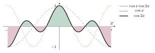
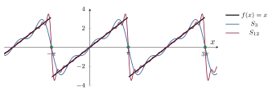
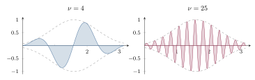
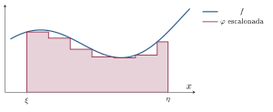
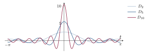
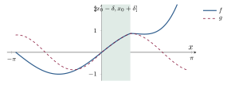
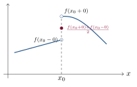
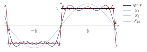
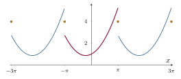

Para arrancarUn acorde de guitarra es suma de senos y cosenos. Fourier se atrevió a decir que CUALQUIER función periódica lo es, y los matemáticos tardaron un siglo en entender cuándo tenía razón.
9.1 Funciones ortogonales
Para hablar formalmente de series de Fourier hace falta adentrarnos en el ámbito de una teoría más general, conocida como teoría de las funciones ortogonales. Es importante tener en cuenta que, para definir los elementos necesarios, necesitamos un espacio euclídeo con producto interno; como caso particular vamos a considerar L2(I), donde I⊆R es un intervalo: el espacio de funciones de cuadrado integrable en I.
Definimos en L2(I) la forma bilineal ⟨⋅,⋅⟩:L2×L2→R,⟨f,g⟩=∫If(x)g(x)dx. Esta forma bilineal satisface las propiedades de producto interno en L2(I):
El producto fg es integrable (en sentido absoluto) gracias a ∣fg∣≤21(f2+g2). En la propiedad 1, «f=0» debe entenderse identificando funciones que difieren sólo en un conjunto despreciable de puntos (por ejemplo, finito): si f es integrable Riemann y ∫If2=0, entonces f(x)=0 en todo punto de continuidad de f.
la desigualdad de Cauchy–Buniakovski: (∫If(x)g(x)dx)2≤∫If2(x)dx∫Ig2(x)dx;
la desigualdad triangular: ∫I(f(x)+g(x))2dx≤∫If2(x)dx+∫Ig2(x)dx.
Demostraciónmostrar
Para todo λ∈R, por las propiedades 1–4, 0≤⟨f+λg,f+λg⟩=∥f∥2+2λ⟨f,g⟩+λ2∥g∥2. Si ∥g∥=0, el lado derecho es lineal en λ y no negativo para todo λ, lo que obliga a ⟨f,g⟩=0 y la desigualdad es trivial. Si ∥g∥>0, el polinomio cuadrático en λ es no negativo, luego su discriminante es ≤0: 4⟨f,g⟩2−4∥f∥2∥g∥2≤0, que es Cauchy–Buniakovski. Para la triangular: ∥f+g∥2=∥f∥2+2⟨f,g⟩+∥g∥2≤∥f∥2+2∥f∥∥g∥+∥g∥2=(∥f∥+∥g∥)2.
El espacio L2 en el sentido de Lebesgue es completo (es un espacio de Hilbert). Las funciones de cuadrado integrable Riemann forman un subespacio denso de él, pero no completo por sí solo. En estas notas trabajaremos con funciones integrables Riemann (posiblemente en sentido impropio); lo que usaremos es la completitud del sistema trigonométrico (Teorema 10.6).
Sea S={φ0,φ1,…,φn,…} una colección de funciones en L2(I). Si ⟨φm,φn⟩=0 siempre que m=n, S se llama sistema ortogonal en I. Si además ∥φn∥=1, S es ortonormal en I.
¿Qué se puede decir de la completitud de S en L2(I)? Decimos que S es completo si toda f∈L2(I) puede aproximarse en media cuadrática, tanto como se quiera, por combinaciones lineales finitas de elementos de S. Para el sistema trigonométrico la respuesta es afirmativa (Teorema 10.6).
9.2 Sistema trigonométrico. Serie trigonométrica de Fourier
Consideremos L2(−π,π), espacio de funciones de cuadrado integrable en el segmento [−π,π]. La colección {cosnx,sennx}n=0∞ forma un sistema ortogonal completo, llamado usualmente sistema trigonométrico. Por ejemplo, para m=n, ∫−ππcosnxcosmxdx=21∫−ππ(cos(n+m)x+cos(n−m)x)dx=0. El sistema normal correspondiente es 2π1,πcosnx,πsennx(n=1,2,…).
La serie de la forma 2a0+n=1∑∞ancosnx+bnsennx, donde {an}, {bn} son sucesiones en R, se denomina serie trigonométrica. Sus sumas parciales son combinaciones lineales de las funciones que componen el sistema.
∀m=n (m,n≥1), ∫−ππsennxsenmxdx=21∫−ππ(cos(n−m)x−cos(n+m)x)dx=2(n−m)sen(n−m)x−ππ−2(n+m)sen(n+m)x−ππ=0,∫−ππcos2nxdx=21∫−ππ(1+cos2nx)dx=π,∫−ππsen2nxdx=21∫−ππ(1−cos2nx)dx=π. Del mismo modo, cosnxcosmx=21(cos(n+m)x+cos(n−m)x) da la primera igualdad, pues ∫−ππcoskxdx=ksenkx−ππ=0 para k=0 entero. Para la tercera, cosnxsenmx es impar y el intervalo es simétrico, luego su integral es 0 (también para n=m y si alguno es 0). Si en la segunda alguno de m,n es 0 el integrando es nulo.

Ortogonalidad: las áreas positivas (verde) y negativas (vino) de cosxcos2x en [−π,π] se cancelan exactamente: ∫−ππcosxcos2xdx=0.
Teorema 9.8· Coeficientes de una serie uniformemente convergente
Sea f(x)=2a0+n=1∑∞ancosnx+bnsennx. Supongamos que el segundo miembro converge uniformemente en el segmento [−π,π]. Entonces a0=π1∫−ππf(x)dx,an=π1∫−ππf(x)cosnxdx,bn=π1∫−ππf(x)sennxdx,n≥1.
Demostraciónmostrar
Como el segundo miembro converge uniformemente en [−π,π] y todos sus términos son funciones continuas en [−π,π], entonces f(x) es continua en [−π,π] y podemos integrar término a término: ∫−ππf(x)dx=∫−ππ(2a0+n=1∑∞ancosnx+bnsennx)dx=2a0∫−ππdx+n=1∑∞(an∫−ππcosnxdx+bn∫−ππsennxdx)=πa0. Entonces a0=π1∫−ππf(x)dx. Para m≥1, la serie multiplicada por la función acotada cosmx sigue convergiendo uniformemente, y por el Lema 9.7, ⟨f,cosmx⟩=∫−ππ2a0cosmxdx+n=1∑∞∫−ππ(ancosnx+bnsennx)cosmxdx=am∫−ππcos2mxdx=πam. Análogamente, ⟨f,senmx⟩=∫−ππf(x)senmxdx=πbm. Esto se puede hacer dado que senmx es continua y la serie sigue convergiendo uniformemente.
Lo anterior tiene sentido no sólo para funciones continuas en [−π,π], sino también para funciones f(x) cuya integral converge absolutamente en [−π,π].
Recordemos que el concepto de integral absolutamente convergente se ha introducido sólo para las funciones definidas en cierto intervalo (a,b), −∞≤a<b≤+∞, que tienen un número finito de puntos xi, i=0,…,k, a≤x0<x1<⋯<xk≤b, tales que f∈Rx[ξi,ηi] donde xi−1<ξi<ηi<xi; los {xi} son los puntos singulares. Si, asumidas estas suposiciones, la integral ∫ab∣f(x)∣dx converge, siempre tiene sentido y converge la integral ∫abf(x)dx.
Observemos que si una función es integrable según Riemann en cierto segmento, su valor absoluto es también integrable según Riemann en el mismo y, por consiguiente, f∈Rx[a,b]⇒∣f∣∈Rx[a,b].
Si la integral de f converge absolutamente en [−π,π], las integrales del teorema anterior también convergen, pues el integrando es producto de una función absolutamente integrable y una función acotada (y continua). Entonces las integrales son absolutamente convergentes.
Sea f(x) absolutamente integrable en [−π,π]. La serie trigonométrica 2a0+n=1∑∞ancosnx+bnsennx, cuyos coeficientes son a0=π1∫−ππf(x)dx,an=π1∫−ππf(x)cosnxdx,bn=π1∫−ππf(x)sennxdx, se denomina serie trigonométrica de Fourier, y los números an y bn se llaman coeficientes de Fourier de la función f. En este caso escribimos f(x)∼2a0+n=1∑∞ancosnx+bnsennx.
Por el Teorema 9.8: toda serie trigonométrica uniformemente convergente es la serie de Fourier de su suma.
f es una función periódica de periodo T>0 si f(x+T)=f(x)∀x∈Domf.
Sea f absolutamente integrable en [−π,π] y, por consiguiente, le podemos asignar una serie de Fourier. Si la serie citada converge en cierto conjunto, converge hacia una función 2π-periódica, puesto que todos sus términos son 2π-periódicos.
Si una función φ tiene periodo T y para cierto a∈R, φ∈Rx[a,a+T], entonces ∀b∈R, φ∈Rx[b,b+T] y ∫bb+Tφ(x)dx=∫aa+Tφ(x)dx.
Demostraciónmostrar
Por la sustitución x=y+kT y la periodicidad, φ es integrable en cada [a+kT,a+(k+1)T], k∈Z, con la misma integral, y por tanto en cualquier segmento acotado. Sea k∈Z con a+kT≤b<a+(k+1)T. Entonces ∫bb+Tφ=∫ba+(k+1)Tφ+∫a+(k+1)Tb+Tφ=∫ba+(k+1)Tφ+∫a+kTbφ=∫a+kTa+(k+1)Tφ=∫aa+Tφ, donde en el segundo sumando hicimos x=y+T. El mismo argumento vale si φ es absolutamente integrable en sentido impropio en un periodo.
f(x)=x en (−π,π). Es impar, luego an=0, e integrando por partes bn=π2∫0πxsennxdx=π2[−nxcosnx]0π+πn2∫0πcosnxdx=n2(−1)n+1,x∼2n=1∑∞n(−1)n+1sennx.
f(x)=sgnx (onda cuadrada). Es impar y bn=π2∫0πsennxdx=πn2(1−(−1)n): sgnx∼π4k=0∑∞2k+1sen(2k+1)x.
f(x)=∣x∣. Es par, luego bn=0, a0=π2∫0πxdx=π y an=π2∫0πxcosnxdx=πn22((−1)n−1): ∣x∣∼2π−π4k=0∑∞(2k+1)2cos(2k+1)x.

Serie de Fourier de f(x)=x: converge a la prolongación 2π-periódica; en los saltos x=(2k+1)π converge al promedio 0 (puntos verdes).
Si la función f es absolutamente integrable en (a,b), sea éste finito o infinito, entonces ν→∞lim∫abf(x)cosνxdx=ν→∞lim∫abf(x)senνxdx=0.

Riemann–Lebesgue: al crecer ν, la función f(x)senνx oscila cada vez más rápido dentro de la envolvente ±f; las áreas positivas y negativas se cancelan casi por completo y ∫f(x)senνxdx→0.
Los coeficientes de Fourier an=π1∫−ππf(x)cosnxdx, bn=π1∫−ππf(x)sennxdx de una función absolutamente integrable en [−π,π] tienden a cero cuando n→∞.
Para toda f definida en todo el eje numérico, la clausura del conjunto de puntos en los cuales f(x)=0 lleva el nombre de portador (soporte) de la función, y se designa suppf.
Una función f, definida en todo el eje numérico, se llama escalonada finita siempre que es combinación lineal de funciones características de semintervalos disjuntos dos a dos [aj,bj), j=1,2,…,m; es decir, f(x)=∑j=1mλjχj(x).
Una función escalonada finita f es integrable en R y, si f(x)=∑j=1mλjχj(x), ∫−∞∞f(x)dx=∫−∞∞j=1∑mλjχj(x)dx=j=1∑mλj∫ajbjdx=j=1∑mλj(bj−aj).
Para toda f absolutamente integrable en un intervalo finito o infinito de extremos a,b, −∞≤a<b≤∞, existe una sucesión de funciones escalonadas finitas φn tal que:
suppφn⊂(a,b);
limn→∞∫ab∣f(x)−φn(x)∣dx=0.
Demostraciónmostrar
Supongamos que f es absolutamente integrable en (a,b) y que f es integrable en [ξ,η] donde −∞≤a<ξ<η<b≤+∞ (es decir, sus únicos puntos singulares son los extremos; el caso general se reduce a éste, ver abajo). Entonces, de la definición de integral impropia, ∀ε>0 fijo existen ξ,η tales que ∫aξ∣f(x)∣dx+∫ηb∣f(x)∣dx<2ε. Como f∈Rx[ξ,η], si designamos sT la suma inferior de Darboux de f correspondiente a cierta partición T de [ξ,η], tenemos limμ(T)→0sT=∫ξηf(x)dx. Por ello, existe una partición T0={xi}i=0k de [ξ,η] tal que, si sT0=∑i=1kmiΔxi, mi=infΔxif, es la suma inferior correspondiente, entonces 0≤∫ξηf(x)dx−sT0<2ε. Sea φ(x)={mi,0,si x∈Δxi=[xi−1,xi),i=1,…,k,si x<ξoˊx≥η. Entonces φ(x) es una función escalonada finita, suppφ⊂[ξ,η]⊂(a,b) y ∫ξηφ(x)dx=∑i=1kmiΔxi=sT0. Así, ∫ξη(f(x)−φ(x))dx=∫ξηf(x)dx−∫ξηφ(x)dx<2ε. Como φ(x)≤f(x) para ξ≤x<η, entonces f(x)−φ(x)=∣f(x)−φ(x)∣≥0; por tanto ∫ab∣f(x)−φ(x)∣dx=∫aξ∣f(x)∣dx+∫ξη(f(x)−φ(x))dx+∫ηb∣f(x)∣dx<ε. Poniendo, por ejemplo, ε=n1 y denotando las correspondientes funciones escalonadas finitas φ mediante φn, se obtiene el lema.
Caso general. Si f tiene puntos singulares a≤x0<x1<⋯<xk≤b, aplicamos lo anterior en cada intervalo (xi−1,xi) (y en (a,x0), (xk,b) si no son vacíos) con ε dividido por el número de intervalos, y sumamos las funciones escalonadas obtenidas: la suma es escalonada finita (los semintervalos siguen siendo disjuntos), su soporte está en (a,b) y la integral de ∣f−φ∣ es menor que ε.

Función escalonada finita φ≤f construida con los ínfimos mi de una suma inferior de Darboux en [ξ,η]; fuera de [ξ,η) vale 0. El área entre f y φ se puede hacer tan pequeña como se quiera.
Demostraciónmostrar
(Del Teorema de Riemann–Lebesgue.) Sea χ(x) la función característica del semintervalo [ξ,η). Para todo intervalo (a,b)⊃[ξ,η] tenemos ν→∞lim∫abχ(x)senνxdx=ν→∞lim∫ξηsenνxdx=ν→∞limνcosνξ−cosνη=0, pues νcosνξ−cosνη≤ν∣cosνξ∣+∣cosνη∣≤ν2→0. Por linealidad, lo mismo vale para toda función escalonada finita φ=∑λjχj con soporte en (a,b).
Ahora, si f es absolutamente integrable en el intervalo de extremos a,b, −∞≤a<b≤+∞, ∀ε>0 existe (Lema 9.19) una función escalonada finita φ tal que ∫ab∣f(x)−φ(x)∣dx<2ε. Para esta función escalonada existe νε tal que ∣ν∣≥νε implica ∫abφ(x)senνxdx<2ε. Usando la igualdad f(x)=(f(x)−φ(x))+φ(x), para ∣ν∣≥νε tenemos ∫abf(x)senνxdx≤∫ab∣f(x)−φ(x)∣dx+∫abφ(x)senνxdx<ε. Es decir, limν→∞∫abf(x)senνxdx=0; así mismo limν→∞∫abf(x)cosνxdx=0 (con ∫ξηcosνxdx=νsenνη−senνξ, también acotado por ν2).
InteractivoRiemann–Lebesgue en acción
Aumenta ν: las oscilaciones cancelan el área.
9.4 Integral de Dirichlet. Principio de localización
Sea f(x) absolutamente integrable en [−π,π]. Hallemos una expresión, cómoda para investigar, de las sumas parciales Sn(x;f) de la serie de Fourier de f(x), o suma de Fourier de n-ésimo orden: Sn(x;f)=2a0+k=1∑nakcoskx+bksenkx=2π1∫−ππf(t)dt+k=1∑nπ1∫−ππf(t)(cosktcoskx+senktsenkx)dt=π1∫−ππf(t)(21+k=1∑ncosk(t−x))dt. Sea Dn(t)=21+k=1∑ncoskt;entoncesSn(x;f)=π1∫−ππDn(t−x)f(t)dt. Más explícitamente: de 2coskusen2u=sen22k+1u−sen22k−1u se obtiene sen2u=21⋅2sen2u,sen23u−sen2u=cosu⋅2sen2u,…,sen22n+1u−sen22n−1u=cosnu⋅2sen2u. Sumando (la suma de la izquierda es telescópica), entonces 21+cosu+cos2u+⋯+cosnu=2sen2usen22n+1u,entoncesDn(t)=2sen2tsen22n+1t(t=2kπ). La función Dn(t) se llama núcleo de Dirichlet y π1∫−ππDn(t−x)f(t)dt se llama integral de Dirichlet.

Núcleo de Dirichlet Dn(t)=21+∑k=1ncoskt=2sen2tsen(n+21)t: pico de altura n+21 en t=0 y oscilaciones cada vez más rápidas; siempre π1∫−ππDn=1.
es una función par, continua, 2π-periódica, con Dn(0)=n+21;
satisface π1∫−ππDn(t)dt=1;
cuando t=2πk, k=0,±1,±2,…, Dn(t)=2sen2tsen(n+21)t.
Demostraciónmostrar
(i) Dn=21+∑k=1ncoskt es suma finita de funciones pares, continuas y 2π-periódicas; Dn(0)=21+n. (ii) Por el Lema 9.7, ∫−ππcosktdt=0 para k≥1, luego π1∫−ππDn=π1⋅21⋅2π=1. (iii) Es la identidad telescópica de arriba, válida cuando sen2t=0. Como Dn es par, de (ii) también se tiene π2∫0πDn(t)dt=1.
Para la suma parcial de Fourier Sn(x;f) de una función 2π-periódica absolutamente integrable f son válidas Sn(x;f)=π1∫−ππDn(t)f(x+t)dtySn(x;f)=π1∫0πDn(t)(f(x+t)+f(x−t))dt.
Demostraciónmostrar
Sea u=t−x: Sn(x;f)=π1∫−ππDn(t−x)f(t)dt=π1∫−π−xπ−xDn(u)f(x+u)du=π1∫−ππDn(u)f(x+u)du, donde en el último paso usamos que u↦Dn(u)f(x+u) es 2π-periódica y la Observación 9.11. Para la otra igualdad, con u=−t en la integral sobre [−π,0] y la paridad de Dn: Sn(x;f)=π1∫−π0Dn(u)f(x+u)du+π1∫0πDn(u)f(x+u)du=π1∫0πDn(t)f(x−t)dt+π1∫0πDn(u)f(x+u)du.
∀δ∈(0,π), x∈[−π,π], la suma Sn(x;f), donde f es función 2π-periódica absolutamente integrable, posee la siguiente representación integral asintótica: Sn(x;f)=π1∫0δDn(t)(f(x+t)+f(x−t))dt+o(1),n→∞.
Demostraciónmostrar
Fijando δ, 0<δ<π, Sn(x;f)=π1∫0δDn(t)(f(x+t)+f(x−t))dt+π1∫δπDn(t)(f(x+t)+f(x−t))dt. La función 2sen2t1 es continua y acotada en [δ,π] (∀t∈[δ,π], 0<2sen2t1≤2sen2δ1), y f(x+t)+f(x−t), ∀x∈[−π,π] fijo, es 2π-periódica según t y absolutamente integrable en [−π,π]; entonces 2sen2tf(x+t)+f(x−t) es absolutamente integrable en [δ,π]. Por el Teorema de Riemann–Lebesgue (con ν=n+21), π1∫δπDn(t)(f(x+t)+f(x−t))dt=π1∫δπ2sen2tf(x+t)+f(x−t)sen(n+21)tdt→0 cuando n→∞; en otras palabras, es o(1), n→∞.
Si f es una función 2π-periódica absolutamente integrable, la existencia y el valor del límite de la sucesión de sumas parciales de Fourier Sn(x0;f) en todo punto x0∈[−π,π] dependen sólo de la existencia y el valor del límite, para n→∞, de la integral π1∫0δDn(t)(f(x0+t)+f(x0−t))dt, donde δ es un número positivo tan pequeño como se quiera.
Demostraciónmostrar
Por el Corolario 9.22, Sn(x0;f) y la integral del enunciado difieren en una sucesión que tiende a 0; luego una tiene límite si y sólo si la otra lo tiene, y los límites coinciden.
Subrayemos que en la expresión subintegral de la integral citada figuran sólo los valores de la función f en el segmento [x0−δ,x0+δ] y, de este modo, la existencia y el valor del límite de las sumas parciales de la serie de Fourier de la función f sólo dependen de sus propiedades en el entorno del punto x0.
Del principio de localización proviene que si en un entorno, tan pequeño como se quiera, del punto x0 las funciones f y g coinciden, entonces los límites limn→∞Sn(x0;f) y limn→∞Sn(x0;g) existen o no simultáneamente, y si existen son iguales. Aunque en el caso general las series de Fourier de ambas funciones son diferentes, pues en las fórmulas para los coeficientes de Fourier figuran los valores de la función en todo el segmento [−π,π].

Principio de localización: f y g coinciden en el entorno sombreado de x0 y difieren fuera de él. Sus series de Fourier son distintas, pero en x0 ambas convergen o divergen a la vez, y al mismo valor.
9.5 Convergencia de la serie de Fourier en un punto
Consideremos funciones 2π-periódicas, absolutamente integrables en un segmento de longitud 2π, las cuales tienen puntos de discontinuidad sólo de primera especie, a consecuencia de lo cual en todo punto x0 del eje numérico existen los límites unilaterales h→+0limf(x0+h)=f(x0+0),h→+0limf(x0−h)=f(x0−0).
Un punto x0 se llama punto regular de la función f si f(x0)=2f(x0+0)+f(x0−0).
Si x0 es un punto de discontinuidad de primera especie, a título de sus derivadas unilaterales f+′(x), f−′(x) intervendrán: f+′(x)=h→+0limhf(x+h)−f(x+0),f−′(x)=h→+0lim−hf(x−h)−f(x−0).

Discontinuidad de primera especie: existen los límites laterales. El punto es regular si f(x0) es el promedio (punto vino), que es el valor al que converge la serie de Fourier bajo el criterio de Dini.
Notación.fx∗(t)=deff(x+t)+f(x−t)−f(x+0)−f(x−0). Si x es punto regular, fx∗(t)=f(x+t)+f(x−t)−2f(x).
Para la función f, 2π-periódica y absolutamente integrable en un segmento de longitud 2π, las integrales ∫0δt∣fx∗(t)∣dt(0<δ≤π),∫0π2sen2t∣fx∗(t)∣dt convergen o divergen simultáneamente.
Demostraciónmostrar
∀δ, 0<δ<π, la función 2sen2t1 es continua y por ende integrable según Riemann en [δ,π]. Por tanto, como fx∗(t) (x fijo) es absolutamente integrable en [δ,π], 2sen2tfx∗(t) es absolutamente integrable en [δ,π]; es decir, ∫δπ2sen2t∣fx∗(t)∣dt converge (y por la misma razón ∫δπt∣fx∗(t)∣dt converge, pues t1 es continua en [δ,π]).
Sea δ>0 tal que la función fx∗(t) no tiene puntos singulares en [0,δ] (a excepción, quizá, de t=0); es decir, ∀ε, 0<ε<δ, es integrable según Riemann en [ε,δ]. Esto es posible dado que la integrabilidad absoluta de f estipula que f, y por tanto fx∗, sólo tiene un número finito de puntos singulares.
Nota que 2sen2t∼t, es decir, tfx∗(t)∼2sen2tfx∗(t) cuando t→0; más precisamente, por la concavidad de sen en [0,2π], πt≤sen2t≤2t para t∈[0,π], luego t∣fx∗(t)∣≤2sen2t∣fx∗(t)∣≤2π⋅t∣fx∗(t)∣,0<t≤π. Por tanto, por el criterio de comparación, las integrales ∫0δt∣fx∗(t)∣dt y ∫0δ2sen2t∣fx∗(t)∣dt convergen o divergen simultáneamente, y dado que ∫δπ2sen2t∣fx∗(t)∣dt y ∫δπt∣fx∗(t)∣dt convergen, se sigue el resultado.
Supongamos que una función 2π-periódica f es absolutamente integrable en un segmento de longitud 2π. Si x es un punto de continuidad o punto de discontinuidad de primera especie y, para cierto δ, 0<δ<π, la integral ∫0δtfx∗(t)dt converge, entonces la serie de Fourier de la función f converge en el punto x hacia el valor 2f(x+0)+f(x−0).
Demostraciónmostrar
Por el Lema 9.21 y el Lema 9.20(ii), Sn(x;f)−2f(x+0)+f(x−0)=π1∫0πDn(t)(f(x+t)+f(x−t))dt−2f(x+0)+f(x−0)⋅π2∫0πDn(t)dt, donde π2∫0πDn(t)dt=1. Entonces Sn(x;f)−2f(x+0)+f(x−0)=π1∫0πDn(t)fx∗(t)dt=π1∫0π2sen2tfx∗(t)sen(n+21)tdt. Si ∫0δt∣fx∗(t)∣dt converge, por el Lema 9.25, ∫0π2sen2t∣fx∗(t)∣dt converge; es decir, 2sen2tfx∗(t) es absolutamente integrable en [0,π]. Así, por el Teorema de Riemann–Lebesgue, n→∞limπ1∫0π2sen2tfx∗(t)sen(n+21)tdt=0,asıˊn→∞limSn(x;f)=2f(x+0)+f(x−0).
Si f es una función 2π-periódica absolutamente integrable en un segmento de longitud 2π y si en el punto x existen f(x+0), f(x−0), f+′(x), f−′(x), entonces la serie de Fourier de la función converge en el punto x hacia 2f(x+0)+f(x−0).
Demostraciónmostrar
En virtud del Teorema de Dini basta probar que, si existen los límites f(x+0), f(x−0) y f+′(x), f−′(x), la integral ∫0δt∣fx∗(t)∣dt converge para cierto δ>0. Tenemos t→+0limtfx∗(t)=t→+0lim(tf(x+t)−f(x+0)+tf(x−t)−f(x−0))=f+′(x)−f−′(x). El límite existe; así la función tfx∗(t) está acotada en cierto entorno de t=0. Por tanto existe δ>0, 0<δ<π, tal que en (0,δ] la función tfx∗(t) está acotada y no tiene puntos singulares (basta tomar δ menor que la distancia de x a los demás puntos singulares de f); así es integrable según Riemann en [0,δ] (definiéndola en t=0 por su límite), y una función Riemann integrable es absolutamente integrable; luego ∫0δt∣fx∗(t)∣dt<∞.
La serie de Fourier de una función f, continuamente derivable a trozos en [−π,π], converge en todo punto del intervalo (−π,π) hacia el valor 2f(x+0)+f(x−0), y en los puntos x=−π y x=π al valor 2f(−π+0)+f(π−0).
Función continuamente derivable a trozos en [−π,π] significa: existe una partición −π=t0<t1<⋯<tm=π tal que en cada (tj−1,tj) la función es de clase C1 y f y f′ tienen límites laterales finitos en los extremos tj. En tal caso, en todo punto existen f(x±0) y, por el Teorema del Valor Medio en cada pieza, también f±′(x) (iguales a los límites laterales de f′).
Demostraciónmostrar
Prolonguemos la función f definida en el segmento [−π,π] de una manera periódica con el periodo igual a 2π, desde el semintervalo [−π,π) a todo el eje numérico, y designemos la función obtenida por fˉ. Como fˉ es derivable a trozos, cumple las condiciones del Corolario 9.28; por tanto su serie de Fourier, que coincide con la serie de Fourier de f, converge en cada punto x hacia 2fˉ(x+0)+fˉ(x−0). Si x∈(−π,π), fˉ(x±0)=f(x±0). Si x=−π la serie converge a 2fˉ(−π+0)+fˉ(−π−0), y si x=π hacia 2fˉ(π+0)+fˉ(π−0). Dado que fˉ es periódica, se tiene fˉ(−π−0)=fˉ(π−0)=f(π−0),fˉ(π+0)=fˉ(−π+0)=f(−π+0). Se sigue el resultado.
La serie de Fourier de una función continua, derivable a trozos en [−π,π], converge en todo punto de (−π,π) hacia el valor de la función en este punto, y para x=−π y x=π al valor 2f(−π+0)+f(π−0).
Demostraciónmostrar
Si f es continua en [−π,π], en todo x∈(−π,π) se tiene f(x+0)=f(x−0)=f(x), y basta aplicar el Corolario 9.29.

Onda cuadrada: en los puntos de salto las sumas parciales valen 0=2f(x+0)+f(x−0) (puntos dorados). Cerca del salto aparece un sobrepaso que no desaparece (fenómeno de Gibbs): la convergencia no es uniforme.
Aplicando el Corolario 9.29 a las series del Ejemplo 9.12:
En x=2π, sgnx=1: 1=π4∑k≥02k+1(−1)k, es decir, 1−31+51−⋯=4π (serie de Leibniz).
En x=0 la serie de ∣x∣ converge a 0: 0=2π−π4∑k≥0(2k+1)21, luego ∑k≥0(2k+1)21=8π2.
En x=π la serie de x vale 0=2f(−π+0)+f(π−0)=2−π+π, como predice el corolario (y no f(π)=π).
InteractivoSumas parciales de Fourier
Elige la función y el número de armónicos; mira el fenómeno de Gibbs y el núcleo de Dirichlet.
9.6 Prolongaciones periódicas
Sea f absolutamente integrable en el segmento [−π,π] y, por consiguiente, se le puede asignar una serie de Fourier. Si la serie citada converge en cierto conjunto, converge hacia una función 2π-periódica, puesto que todos sus términos son 2π-periódicos; resulta cómodo que la función f sea prolongada periódicamente con el periodo 2π. Puede ser prolongada sólo en el caso en que f(−π)=f(π).
Si esto no se cumple, llamaremos prolongación de la función f una función 2π-periódica fˉ que se obtendrá bajo el supuesto de que, para cualquier punto x∈[−π,π) en el que queda definida f (como f es absolutamente integrable en [−π,π], está definida en todos los puntos a excepción, quizá, de un conjunto finito), tenemos fˉ(x+2πk)=f(x),k=0,±1,±2,… Si f(−π)=f(π), los valores de f y fˉ para x=π no coinciden; sin embargo, las series de Fourier de fˉ y f coinciden (los coeficientes son integrales, que no cambian al modificar un punto).
Es posible que la función fˉ no sea continua en los puntos (2k+1)π, k=0,±1,±2,…, aun si la función f es continua para x=−π y x=π. La función prolongada fˉ será continua en los puntos (2k+1)π si f es continua en x=−π,π con la particularidad f(−π)=f(π). La continuidad en todos los (otros) puntos se conserva cuando tiene lugar la prolongación periódica: si f es continua en x∈(−π,π), fˉ será continua en cualquier punto x+2kπ, k=0,±1,±2,…

Prolongación periódica fˉ (azul) de f (vino) desde [−π,π). Como f(−π)=f(π), fˉ salta en los puntos (2k+1)π; allí la serie de Fourier converge a 2f(−π+0)+f(π−0) (puntos dorados).
Ojo, parcero: errores que veo en los parciales
en un salto la serie da f(c) → da el PROMEDIO de los límites laterales
función par ⇒ solo senos → par ⇒ solo cosenos
✦Practica activa
Retos para afianzar las ideas del capítulo: arma la demostración con los bloques en el orden correcto y caza el paso falso de un argumento.
🧩 Ordena la soluciónCoeficientes de Fourier
Halla la serie de Fourier de f(x)=x en (−π,π).
🔍 Encuentra el errorConvergencia en un salto
La serie de Fourier de f(x)=x en (−π,π) se evalúa en x=π.
✎ Repaso del capítulo
Los coeficientes de Fourier de una función absolutamente integrable…
Lema de Riemann–Lebesgue: tienden a 0.
En un salto, la serie de Fourier (Dini) converge a…
Criterio de Dini: converge al promedio 2f(x+)+f(x−) de los límites laterales.
Usando la serie de sgnx en x=π/2: 1−31+51−⋯=
En x=2π la serie de sgn da π4(1−31+51−⋯)=1: la suma es 4π≈0,7854.
La serie de ∣x∣ en (−π,π) tiene…
∣x∣ es par: todos los bn son 0 y quedan solo cosenos.
a0/2 para f=∣x∣ en (−π,π) (decimal).
puedes escribir fracciones como 3/2
a0=π1∫−ππ∣x∣dx=π, así que 2a0=2π≈1,5708.
Los coeficientes de Fourier tienden a 0 (Riemann–Lebesgue).